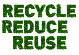

Bem vindo(a) ao EcoCollect
Uma ferramenta para facilitar a coleta seletivaNossa História
Nós da Ambientify lançamos o EcoCollect para facilitar o acesso à coleta seletiva. Por meio desse sistema, os usuários podem criar e configurar pontos de coleta, junto com os materiais que podem ser descartados neles, de maneira rápida, natural e intuitiva.
Nosso Objetivo
Tornar a coleta seletiva rápida, fácil e eficiente para todas as pessoas, por meio de pontos de coleta personalizáveis e guias acessíveis, visando um futuro mais limpo e sustentável.

Como Funciona?
O EcoCollect se utiliza de pontos de coleta criados por usuários para facilitar a coleta seletiva. Pontos de coleta são selecionados por responsáveis, e então são avaliados para verificar a viabilidade. Após a aprovação, os pontos são adicionados por nós. Para incentivar a coleta, criamos um sistema de pontos de coleta, que funciona com base no material e na quantidade de itens descartados. É simples, vários itens? Vários pontos!
Como Participar?
Para fazer parte do programa, basta criar uma conta de usuário e localizar pontos de coleta próximos da sua área, e então, basta registrar os itens e os materiais descartados para receber seus pontos de coleta. Deseja adicionar um ponto de coleta? Basta criar uma conta de responsável e preencher os formulários na aba de cadastro.